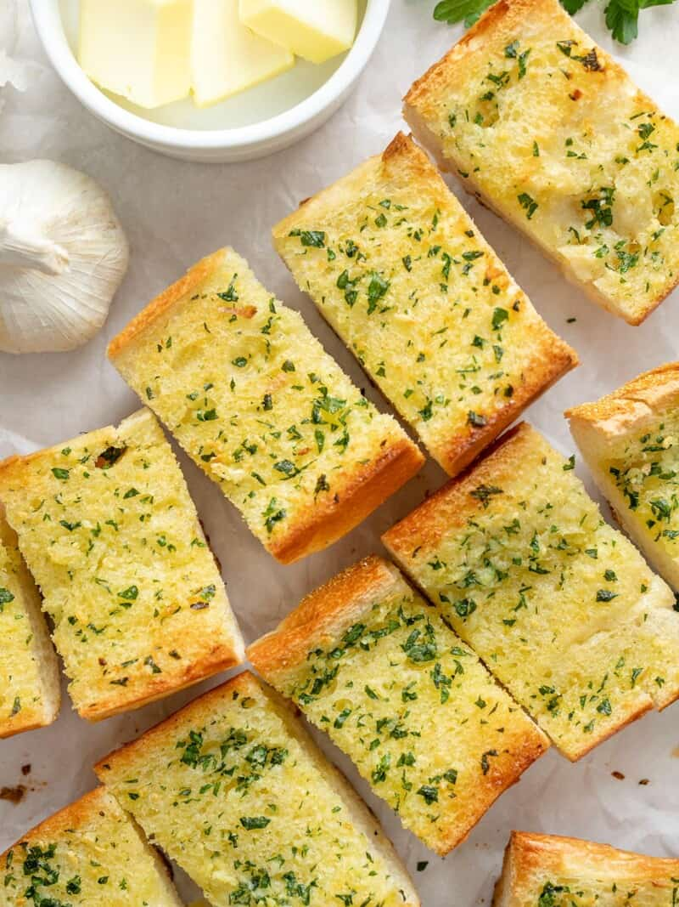

Garlic

Description
Garlic bread is an italian dish consisting of layers of cheese and a tomato based meatsauce and the noodle it gets it's namesake from.
It has it's roots in Italy, but lasagna has spread to many corners of the world. I'll be showing you the version i've been making for my family.
Ingredients
- Bread.................. 10 slices
- Butter (melted)...........................1/2 cup
- Garlic (diced).............. 5 tbsp
- Sugar..........................1 tbsp
Directions
- Melt the butter.
- While your butter is melting, preheat your oven to 350 degrees.
- Mix butter,sugar and garlic.
- Spread garlic mixture evenly on bread.
- Once assembled bake for 30 minutes, turning halfway through.
- Serve while hot. If refrigerating, let cool completely then wrap in plastic wrap.